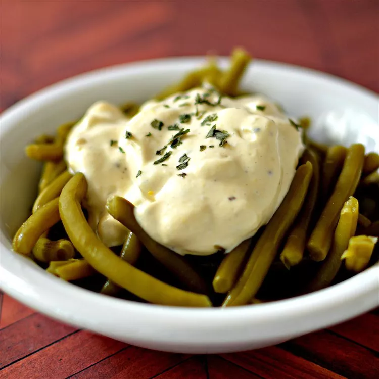

Green Bean Sauce

Description
Flavorful sauce that can be put on green beans, asparagus, broccoli, etc.
Ingredients
- 2 hard-boiled eggs, chopped
- 1 cup mayonnaise
- ½ teaspoon prepared horseradish
- ½ teaspoon lemon juice
- ¼ teaspoon salt
- ⅛ teaspoon ground black pepper
- 1 pinch garlic powder
- 1 pinch dried parsley, or to taste
- 1 dash Worcestershire sauce, or to taste
Steps
-
Mix the eggs, mayonnaise, horseradish, lemon juice, salt, black pepper,
garlic powder, parsley, and Worcestershire sauce in a bowl until well
blended.